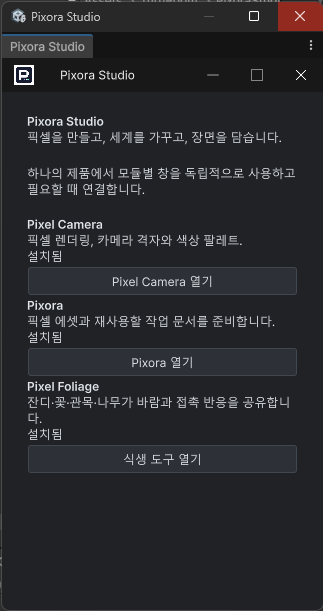

Tracefolio REPORTS & ISSUES
Tracefolio REPORTS & ISSUES공통 창 컨테이너 점검과 사용자 입력 복구
검증 대기창 관련 소스22개를 대조하고 실제 컨테이너 모드 판정·사용자 입력 복구를 추가했습니다. 실제 창 검증은 보류입니다.
작업 결과
공통 프레임과 적용 제품의 코드 수정·컴파일을 완료했습니다. 기본 제목줄 제거·재열기·최소화·데이터 보존의 native 결과는 아직 미확인입니다.
변경 내용
적용 내용
WindowFrame.IsPopupWindow가 CSS 표시 대신 실제 Unity 컨테이너 showMode를 확인합니다. BindPopupRecovery는 사용자 마우스·키 입력 때만 재열기를 요청하며, 컴파일·OnEnable에서 창을 자동으로 열거나 포커스를 가져오지 않습니다.
Image Maker, Pixel Camera, Foliage, 예제 안내·설정·스프라이트 시트, 공통 설정·창 목록, Entity Forge, DDT 검색·환경설정의 재사용/복구 경로를 정리했습니다. 쓰이지 않는 SelectPopup·ValueInputPopup 소스와 메타를 제거했습니다. DDT 주 문서 창 등 나머지 경로도 소스 목록에 기록했으며, 기존 미저장 워크북을 강제 닫는 변경은 하지 않았습니다.

검증
창 관련 소스22개(추상 베이스 포함)를 열거했습니다. 세 모듈의 제품 Editor 경로에서 GetWindow·ShowUtility 호출0을 정적으로 확인했습니다. Unity 메뉴와 일반 선택창을 사용하는 테스트·개발 fixtures는 제품 실행 경로와 구분했습니다.
Unity6000.0.83f1의 실제 Roslyn·Unity 참조로 TurnRoom.Editor, Pixora.Editor, TurnRoom.PixelCamera.Editor, TurnRoom.PixelFoliage.Editor, TurnRoom.EntityForge.Editor, DesignDataTable.Editor 6개 어셈블리 컴파일 exit0. 이는 현재 실행 중인 에디터에 새 도메인이 로드됐다는 증거가 아닙니다.
창 ID·선택값·입력값·위치, Image Maker Undo/Redo 이력과 작업 경로를 재열기에 전달하도록 구현했습니다. 실제 선택·언어 전환·재로드·최소화 복원·기본 제목줄 제거는 사용자 화면 조작 금지로 미실행입니다.
교훈 검토: 기존 전체 경로 대조·실제 검증·화면 중단 지침을 적용했습니다. 새 전역 규칙은 추가하지 않았습니다.
남은 사항
모든 실제 창·보조 창의 재열기, 도메인 재로드, 최소화·최대화·복원, 취소와 키보드 입력, 데이터 보존·밝고 어두운 테마, 실제 컨테이너 모드 및 스크린샷 검증. 사용자 재허락 전 GUI 작업 금지.
작업 시간
- 제안 시간: 전체 작업20–35분
- 실제로 완료된 시간: 2026-11-04 20:08:14 KST 시작. 20:46:11 KST까지 구현·컴파일·정적 검증 약38분. 실제 UI·렌더 검증 완료 시각은 없으며 공개 배포 확인은 최종 채팅에 기록.
- XERJ: 실패 — Status node not running. 직전 복구 Search의 node.lock 점유 근거를 유지하고 rg·현재 소스를 대조했습니다.